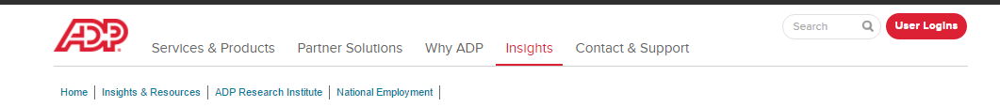

<

Main
Jobs Explorer
Monthly Comparison
Seasonal Comparison
☰
Time Series Comparison of ADP and BLS
To update (1) the time series plot of the ADP and BLS monthly payroll growth estimates and (2) the time series plot
of the differences between the ADP and BLS monthly payroll growth estimates change start and end dates below:
From
To
Update